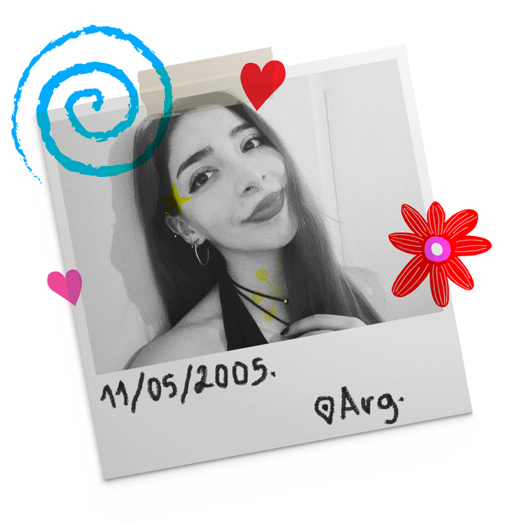
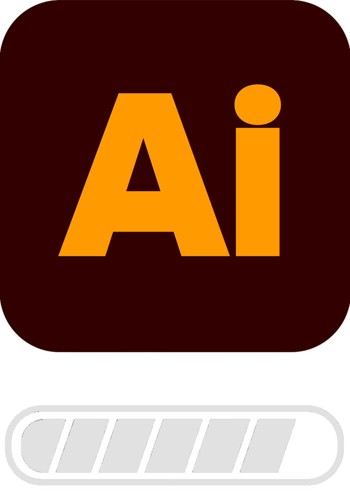
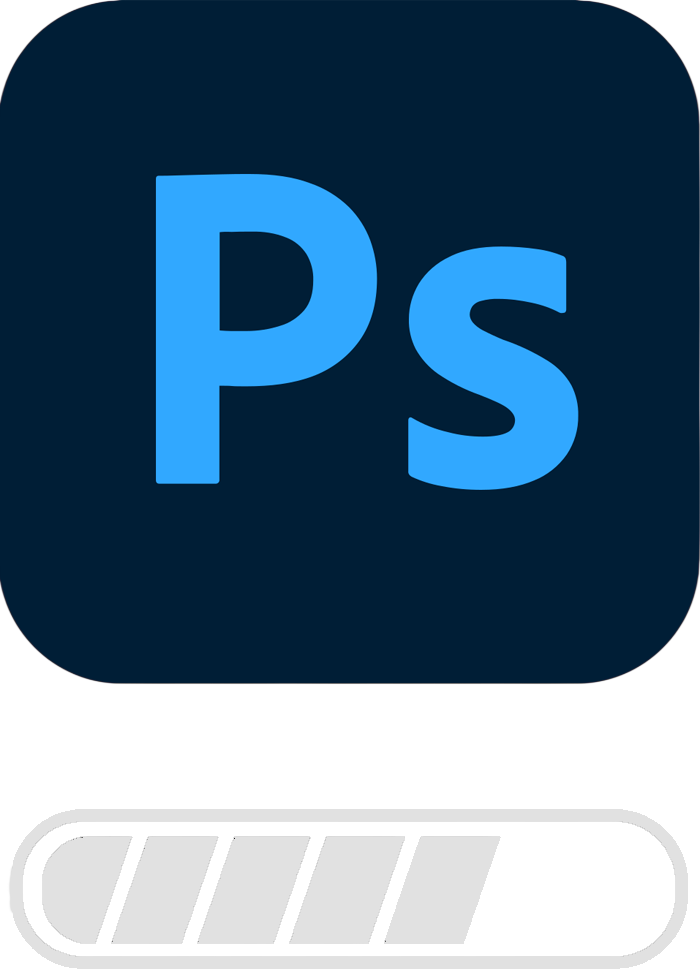
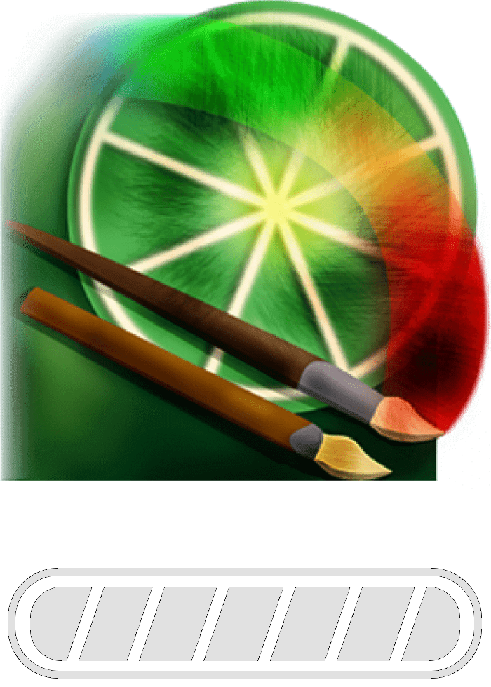

ANA PEREIRA — DISEÑO E ILUSTRACIÓN · BUENOS AIRES
ILUSTRACIÓN
DIGITAL &
SISTEMAS VISUALES
...

Sobre mí
¡Hola! Soy Ana Pereira, estudiante de diseño y entusiasta del arte. Mi trabajo abarca desde la ilustración digital hasta el desarrollo de sistemas de comunicación adaptables a diversas plataformas e instancias de producción. Me destaco por mi versatilidad para trabajar bajo restricciones técnicas y conceptuales exigentes, manteniendo siempre un alto criterio estético.
Busco integrarme en proyectos desafiantes donde pueda aportar una mirada narrativa y creativa, mientras sigo expandiendo mis capacidades técnicas e interdisciplinarias.
+ Mi CV!!PERFIL PROFESIONAL ;)
/ Educación
-
2023 - Actualidad
Licenciatura en Diseño y Comunicación Visual. Universidad Nacional de Lanús.
-
2017 - 2022
Bachiller en Cs. Sociales. Instituto Santa Inés de Turdera.
-
2017 - 2022
Curso de Adobe Photoshop. Universidad Nacional de Lomas De Zamora.
/ Experiencia
-
2024 - Actualidad
Diseñadora & Ilustradora Freelance
Desarrollo de proyectos visuales independientes, abarcando desde la ilustración digital hasta el diseño de piezas tipográficas y sistemas de comunicación visual. -
2024 & 2025
Ilustradora Colaboradora — Proyecto La Maratón.
Participación en la creación e ilustración de piezas visuales para el proyecto colectivo La Maratón, trabajando en concepto, narrativa visual y composición.
/ Herramientas
Paquete Adobe + Ilustración digital







Habilidades Técnicas | Paquete Microsoft Office
- / Excel
- / Word
- / PowerPoint